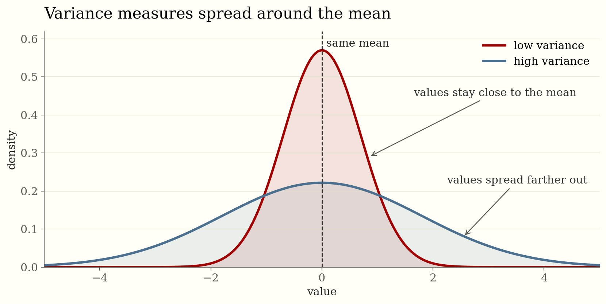
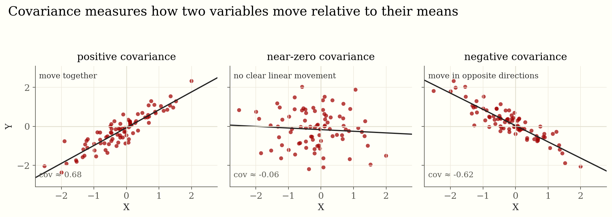

Probability Concepts for Machine Learning Engineers
A practical guide to uncertainty, estimation, inference, and decisions.
Probability is the language we use when a model sees incomplete evidence and still has to make a decision.
The goal of this tutorial is not to list formulas. The goal is to connect each concept to the engineering questions that show up in training, evaluation, calibration, monitoring, and deployment.
1. Start With the Random Variables
Before choosing a model, name the quantities that are uncertain. In supervised learning, \(X\) might be the input features and \(Y\) the target. In a recommender system, \(Z\) might be a hidden user intent. In deployment, \(A\) might be the action we take after the model returns a score.
A random variable maps possible outcomes to values. A distribution tells us how probability is spread over those values.
\[ p_X(x) = \mathbb{P}(X = x) \]
For continuous values, a density is not a probability by itself. Probabilities come from areas under the curve:
\[ \mathbb{P}(a \leq X \leq b) = \int_a^b f_X(x)\,dx \]
Engineering read: discrete probability counts outcomes; continuous probability measures regions. Mixing those up is a common source of confusion around likelihoods and densities.
2. Learn the Three Distribution Views
The joint distribution \(p(x,y)\) describes variables together. The marginal distribution removes variables we are not asking about. The conditional distribution focuses on what is plausible after some evidence is known.
| View | Question | Formula |
|---|---|---|
| Joint | How do \(X\) and \(Y\) behave together? | \(p(x,y)\) |
| Marginal | What does \(X\) look like after removing \(Y\)? | \(p(x)=\sum_y p(x,y)\) |
| Conditional | What does \(Y\) look like once \(X\) is known? | \(p(y \mid x)=p(x,y)/p(x)\) |
In supervised learning, the target is usually \(p(y \mid x)\). In generative modeling, we often care about \(p(x)\) or \(p(x,y)\), because we want to model the process that could have produced the data.
3. Expectations Are the Shape of Training
Expectation is the average value under a distribution:
\[ \mathbb{E}[X] = \sum_x x\,p(x) \qquad \text{or} \qquad \mathbb{E}[X] = \int x f(x)\,dx \]
More generally, we care about the expectation of a function:
\[ \mathbb{E}[g(X)] = \sum_x g(x)p(x) \qquad \text{or} \qquad \mathbb{E}[g(X)] = \int g(x)f(x)\,dx \]
This is exactly how we should think about loss. A training loss is usually an empirical estimate of an expected loss over the data distribution.
Spread and Co-Movement
\[ \mathrm{Var}(X) = \mathbb{E}[X^2] - \mathbb{E}[X]^2 \]
\[ \mathrm{Cov}(X,Y) = \mathbb{E}[(X-\mathbb{E}[X])(Y-\mathbb{E}[Y])] \]
Variance Behavior
Variance is about distance from the mean. When most values stay close to the mean, variance is small. When values spread far away, variance grows. Because the deviations are squared, far-away points matter much more than nearby points.

Covariance Behavior
Covariance is about how two variables move relative to their own means. If \(X\) is above its mean when \(Y\) is also above its mean, their product of deviations is positive. If one is above its mean while the other is below, the product is negative. If there is no stable linear movement, the positive and negative products mostly cancel.

The sign of covariance is easy to interpret; the magnitude is harder because it depends on the units of \(X\) and \(Y\). Correlation fixes that by normalizing covariance into a unitless value between \(-1\) and \(1\).
Engineering read: mini-batch training is noisy because each batch is an estimate of an expectation. Variance is not just a statistic; it is also an optimization behavior.
4. Independence Is an Assumption, Not a Decoration
Independence means that information about one variable does not change what we believe about another. If \(X\) and \(Y\) are independent, then seeing \(X=x\) gives no useful information about \(Y\). The conditional distribution stays the same:
\[ p(y \mid x)=p(y) \]
The same idea can be written through the joint distribution:
\[ p(x,y)=p(x)p(y) \]
Dependence is the opposite: knowing one variable changes the distribution of the other. If users who search for "running shoes" are more likely to click athletic products, then query text and clicked item are dependent. If a model's error rate changes by hospital, then hospital identity and error are dependent. Dependence is a signal that variables share information.
| Relationship | Meaning | Formula |
|---|---|---|
| Independent | Knowing \(X\) does not change beliefs about \(Y\). | \(p(y \mid x)=p(y)\) |
| Dependent | Knowing \(X\) changes beliefs about \(Y\). | \(p(y \mid x)\neq p(y)\) |
| Conditionally independent | The dependence disappears after controlling for \(Z\). | \(p(x,y \mid z)=p(x \mid z)p(y \mid z)\) |
Independence Is Stronger Than Zero Correlation
Correlation and covariance only describe linear co-movement. Independence says there is no relationship at all: no linear pattern, no curved pattern, no threshold pattern, no useful information. So independent variables have zero covariance, but zero covariance does not always imply independence.
For example, if \(X\) is symmetric around zero and \(Y=X^2\), then \(X\) and \(Y\) are clearly dependent: knowing that \(|X|\) is large tells us \(Y\) is large. But the linear covariance can be zero because positive and negative values of \(X\) cancel out.
Conditional Independence
Conditional independence is often more useful than plain independence. It means two variables may look related overall, but once we know a third variable, the relationship is explained away.
Suppose \(Z\) is user intent, \(X\) is query text, and \(Y\) is the clicked item. Query text and clicked item are dependent overall. But if intent were fully known, the query and click might be independent given intent:
\[ p(x,y \mid z)=p(x \mid z)p(y \mid z) \]
This is the kind of assumption that makes graphical models, Naive Bayes, hidden Markov models, and Bayesian networks useful. It lets us factor a large distribution into smaller pieces.
The i.i.d. Assumption
In machine learning, we often assume examples are independent and identically distributed: i.i.d. Independent means one training example does not affect another. Identically distributed means they are drawn from the same underlying distribution.
This assumption is what allows a validation set to estimate production performance. But it can fail in real systems. User sessions create dependence between examples. Duplicate data leaks information across train and test. Time trends break the "same distribution" part. Deployment feedback loops make future data depend on previous model decisions.
Engineering read: independence is not a default truth; it is an assumption. When it fails, metrics can look better than reality because the validation data is not giving an honest independent test.
5. Bayes' Rule: Updating Belief With Evidence
Bayes' rule is the cleanest expression of how prior belief and evidence combine:
\[ p(\theta \mid D) = \frac{p(D \mid \theta)p(\theta)}{p(D)} \]
| Term | Name | Meaning |
|---|---|---|
| \(p(\theta)\) | Prior | What we believe before seeing the data |
| \(p(D \mid \theta)\) | Likelihood | How well \(\theta\) explains the observed data |
| \(p(D)\) | Evidence | The normalizer that makes probabilities sum to one |
| \(p(\theta \mid D)\) | Posterior | What we believe after seeing the data |
Maximum likelihood ignores the prior and chooses parameters that make the data most probable:
\[ \hat{\theta}_{\mathrm{MLE}}=\arg\max_\theta p(D \mid \theta) \]
Maximum a posteriori estimation includes the prior:
\[ \hat{\theta}_{\mathrm{MAP}}=\arg\max_\theta p(D \mid \theta)p(\theta) \]
This is why regularization often has a Bayesian interpretation. An \(L_2\) penalty behaves like a Gaussian prior over weights. An \(L_1\) penalty behaves like a Laplace prior.
6. Likelihood and Cross-Entropy
If data points are assumed independent given \(\theta\), the likelihood factors into a product:
\[ p(D \mid \theta)=\prod_{i=1}^n p(x_i \mid \theta) \]
Products of many probabilities become tiny, so we optimize log-likelihood instead:
\[ \log p(D \mid \theta)=\sum_{i=1}^n \log p(x_i \mid \theta) \]
Cross-entropy compares the true distribution \(p\) with the model distribution \(q\):
\[ H(p,q)=-\mathbb{E}_{x\sim p}[\log q(x)] \]
Engineering read: cross-entropy does not just reward being correct. It rewards calibrated confidence and punishes confident mistakes.
7. Common Distributions Worth Recognizing
| Distribution | Use it when | ML example |
|---|---|---|
| Bernoulli | There is one binary outcome. | Click or no click, fraud or not fraud. |
| Categorical | There is one label among \(K\) choices. | Multiclass classification or next-token prediction. |
| Binomial | You count successes across fixed trials. | Conversion counts in an experiment. |
| Poisson | You count events over time or space. | Arrivals, defects, rare events. |
| Gaussian | You model continuous symmetric noise. | Regression residuals or approximate posteriors. |
| Beta | You need uncertainty over one probability. | Bayesian conversion-rate modeling. |
| Dirichlet | You need uncertainty over class probabilities. | Topic proportions or class-prior uncertainty. |
8. Sampling: Estimating What We Cannot Compute
Many expectations are too hard to calculate exactly. Monte Carlo methods estimate them with samples:
\[ \mathbb{E}[g(X)] \approx \frac{1}{m}\sum_{j=1}^m g(x^{(j)}), \qquad x^{(j)}\sim p(x) \]
This pattern appears in bootstrapping, dropout, posterior approximation, simulation, policy gradients, uncertainty estimation, and offline evaluation.
Tradeoff: more samples usually reduce variance, but they cost compute. Better sampling focuses effort where it reduces uncertainty the most.
9. Why Averages Work Until They Do Not
The law of large numbers says sample averages converge toward expectations:
\[ \frac{1}{n}\sum_{i=1}^n X_i \to \mathbb{E}[X] \]
The central limit theorem says normalized sums often look Gaussian:
\[ \frac{\sum_{i=1}^n X_i-n\mu}{\sigma\sqrt{n}} \Rightarrow \mathcal{N}(0,1) \]
These ideas justify confidence intervals, error bars, and many diagnostics. The catch is that dependence, heavy tails, selection bias, and distribution shift can weaken the comfort they provide.
10. Bias, Variance, and Irreducible Noise
Bias is systematic error. Variance is sensitivity to the sample. Irreducible noise is the part of the target the features simply do not reveal.
\[ \mathbb{E}[(\hat{f}(x)-f(x))^2] = \mathrm{Bias}[\hat{f}(x)]^2 + \mathrm{Var}[\hat{f}(x)] + \sigma^2 \]
Regularization, early stopping, data augmentation, ensembling, and better features all reshape this tradeoff. They do not remove the irreducible term.
11. Entropy, KL, and Calibration
Entropy measures uncertainty:
\[ H(p)=-\sum_x p(x)\log p(x) \]
KL divergence measures how much extra cost we pay when we use \(q\) while the true distribution is \(p\):
\[ D_{\mathrm{KL}}(p\Vert q)=\sum_x p(x)\log\frac{p(x)}{q(x)} \]
Calibration asks a more operational question: when a model says \(0.8\), is it right about \(80\%\) of the time? Accuracy and calibration are different. A model can be accurate but dangerously overconfident.
Engineering read: if probabilities drive decisions, inspect calibration, not just accuracy.
12. Decisions, Thresholds, and Shift
Predictions become useful when they are connected to actions. Decision theory says choose the action with the lowest expected loss:
\[ a^\star=\arg\min_a \mathbb{E}[L(a,Y)\mid x] \]
That is why a threshold is not just a model setting. It is a cost decision. A false positive and false negative usually do not cost the same.
Finally, remember that production data may not match training data:
\[ p_{\mathrm{train}}(x,y)\neq p_{\mathrm{prod}}(x,y) \]
Monitor feature distributions, prediction distributions, labels when they arrive, calibration, delayed outcomes, and downstream actions. Most real systems fail slowly before they fail loudly.
Practical Workflow
- Name the random variables: inputs, labels, latent factors, decisions, and costs.
- State the target: \(p(y \mid x)\), \(p(x)\), \(p(x,y)\), a score, or an action.
- Write down the assumptions: independence, noise model, priors, stationarity, and missingness.
- Train with an objective that matches the probability you want the model to output.
- Evaluate both prediction quality and uncertainty quality.
- Stress-test imbalance, missing data, rare cases, and distribution shift.
- Choose thresholds using the real loss function, not a default value.
Formula Sheet
| Concept | Formula |
|---|---|
| Conditional probability | \(p(a\mid b)=p(a,b)/p(b)\) |
| Product rule | \(p(a,b)=p(a\mid b)p(b)=p(b\mid a)p(a)\) |
| Marginalization | \(p(a)=\sum_b p(a,b)\) or \(p(a)=\int p(a,b)\,db\) |
| Bayes' rule | \(p(a\mid b)=p(b\mid a)p(a)/p(b)\) |
| Expectation | \(\mathbb{E}[X]=\sum_x xp(x)\) or \(\int xf(x)\,dx\) |
| Variance | \(\mathrm{Var}(X)=\mathbb{E}[X^2]-\mathbb{E}[X]^2\) |
| Entropy | \(H(p)=-\sum_x p(x)\log p(x)\) |
| Cross-entropy | \(H(p,q)=-\mathbb{E}_{p}[\log q(X)]\) |
| KL divergence | \(D_{\mathrm{KL}}(p\Vert q)=\mathbb{E}_p[\log p(X)-\log q(X)]\) |
Closing Perspective
Probability is not extra theory attached to machine learning. It is the grammar behind models that learn from incomplete data and act under uncertainty.
The practical goal is simple: define the variables, understand the distribution, optimize the right objective, validate uncertainty honestly, and make decisions with costs in view.